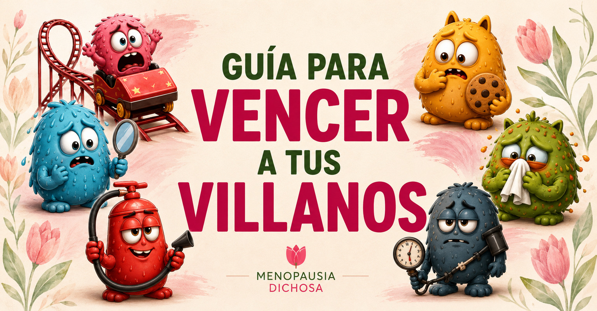
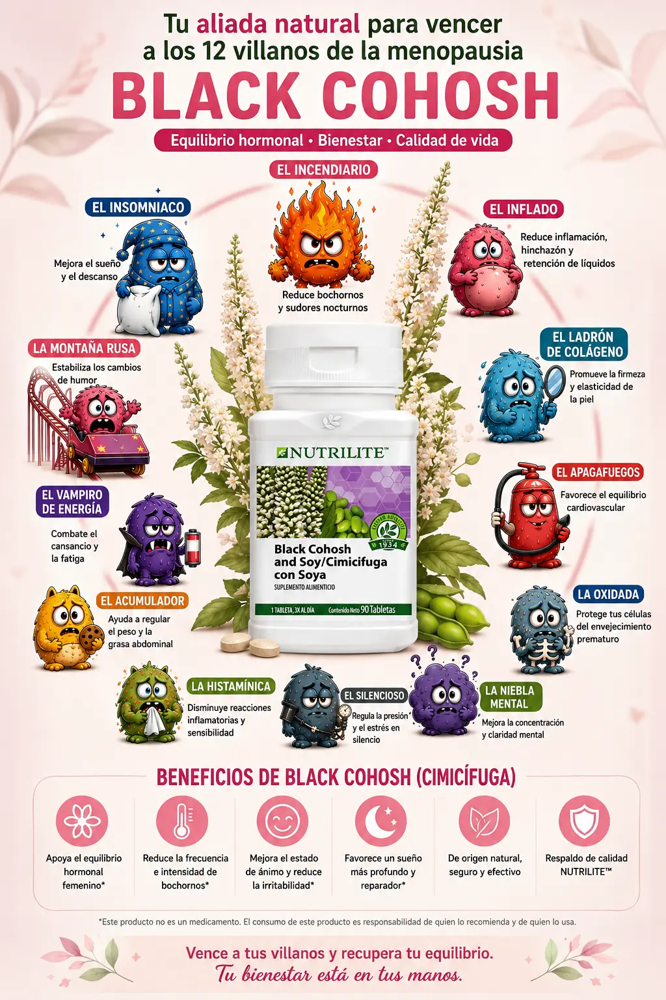

DESCUBRE · ACOMPAÑA

Test de Villanos
Reconoce qué cambios están presentes y abre conversación sin convertir el resultado en diagnóstico.
ABRIR TEST →Recursos que usarás con otras mujeres en distintas etapas de la Ruta.
Reconoce qué cambios están presentes y abre conversación sin convertir el resultado en diagnóstico.
ABRIR TEST →
Interpreta la combinación de Villanos y propone un primer plan. La Embajadora acompaña el resultado; no lo reinterpreta.
ABRIR ALIANZAS →
Opciones complementarias de apoyo nutricional. No sustituyen valoración profesional ni se presentan como tratamiento.
VER RECURSOS →
Aprende a preparar, facilitar, cerrar y dar seguimiento a tu primer encuentro.
IR AL ENTRENAMIENTO →
Compártela con una mujer interesada. La Ruta de Inicio se entrega únicamente después de que confirme.
VER PROPUESTA →
Cuadernillo presencial para registrar intensidad, Villanos prioritarios, Plan D.I.C.H.O.S.A.® y evolución.
ARCHIVO PENDIENTE DE INCORPORAR